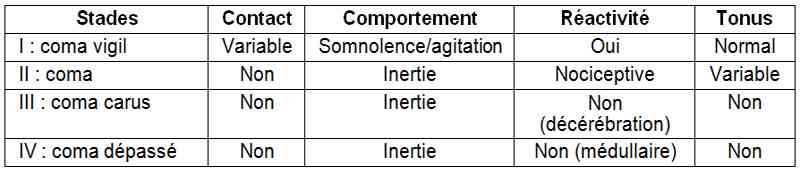
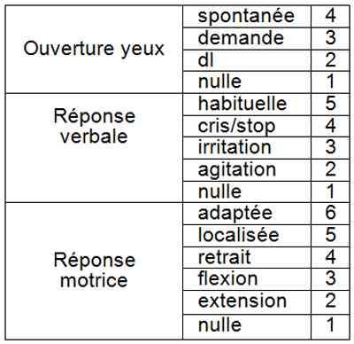

Bienvenue Sur Medical Education
Coma chez l'enfant
EnfantSpécialité : neurologie / pédiatrie / symptômes /
Points importants
- Le coma est l'abolition de la conscience et de la vigilance en réponse aux stimulations
- Les fonctions végétatives sont plus ou moins bien conservées
- La cause la plus fréquente en pédiatrie est le coma post-critique
- L’interrogatoire des parents est souvent fondamental pour le diagnostic
Présentation clinique / CIMU
SIGNES FONCTIONNELS
Généraux
- Altération de la conscience
Spécifiques
-
Signes neurologiques :
- raideur de nuque
- hémiplégie
- mydriase, myosis
- troubles oculomoteurs
- altérations cardio-respiratoires
CONTEXTE
Terrain
- Epilepsie
- Pathologies neuro-vasculaires
- Pathologie du métabolisme
- Maladie endocrinienne
- Alcoolisme, toxicomanie (chez l’adolescent)
Antécédents
- Traumatisme crânien
- Epilepsie
- Pathologies neurométaboliques ou endocriniennes connues
Traitement
- Psychotropes
Facteurs de risque
- Pathologie métabolique (décompensation rapide, pronostic vital)
- Tentative de suicide (habituellement ingestion de doses massives de plusieurs médicaments)
Circonstances de survenue
- Début progressif ou brutal
- Fièvre (encéphalite, méningite)
- Viroses, surtout digestives (déshydratation aiguë, décompensation de pathologie endocrinienne ou métabolique)
- Traumatisme
- Prise de médicaments ou toxiques (volontaire ou accidentelle)
- Crise convulsive précédant le coma (coma post-critique)
EXAMEN CLINIQUE
Recherche
- Type de respiration
- Taille des pupilles
- Réflexe cornéen
- Réflexe photomoteur
- ROTs
- Mouvements oculaires
- Réponse motrice
- Stades de coma chez l’enfant
 _768 Tableau Stades de coma chez l'enfant
- Echelle de Glasgow chez l’enfant
 _769 Tableau Echelle de Glasgow chez l'enfant
-
Signes d'HTIC :
- céphalées / vomissements
- HTA
- bradycardie
- ophtalmoplégie (3 ou 6)
- fontanelle bombante
- disjonction des sutures
- oedème du nerf optique au fond d’œil
- aggravation rapide (mydriase unilatérale)
EXAMENS PARACLINIQUES SIMPLES
- PA, FC, FR/h
- SpO2
- Diurèse/h
- Glycémie capillaire
CIMU
- Tri 1
Signes paracliniques
BIOLOGIQUES
- NFS, électrolytes, ASAT, ALAT, hémostase, ammoniémie, lactate, glycémie, GDS, dosage toxiques (urinaires et sanguins), hémoculture et ECBU, alcoolémie (grand enfant)
-
Si nourrisson ou jeune enfant :
- acides aminés plasmatiques
- acides organiques urinaires
- cétonurie sur BU
- congeler un échantillon d’urines
-
PL :
- si anamnèse infectieuse
- si pas d’explication après imagerie
IMAGERIE
Scanner cérébral (indications)
- HTIC aiguë
- Signes d’engagement
- Traumatisme
- Aggravation du Glasgow
- Convulsions subintrantes
- Fontanelle antérieure tendue
- Signes de localisation
- Etiologie inconnue
Diagnostic étiologique
SIGNES NEURO LOCALISATEURS
- Mydriase unilatérale
- Déviation conjuguée de la tête et des yeux
- Asymétrie des tonus/mouvements
- Babinski unilatéral
- Réflexes unilatéraux
- Convulsions unilatérales
- Foyer/silence EEG
HYPOGLYCEMIE
- Sueurs, convulsions, Babinski bilatéral
MENINGITE / ENCEPHALITE
- Fièvre, fontanelle antérieure tendue, Syndrome méningé, convulsions
CONVULSIONS
- Cause ou conséquence du coma
- Parfois infracliniques
-
Hématome sous-dural du nourrisson :
- apnées, convulsions, PC, fontanelle antérieure tendue, hémorragie au fond d’œil (considérer maltraitance)
HYPERVENTILATION
- Lésions basses
- Acidose métabolique
- Alcalose respiratoire
HYPOVENTILATION
- Alcalose métabolique
- Lésions neurologiques majeures
MEDICAMENTS/CO
- Dissociation entre signes pupillaires (marqués), respiratoires et conscience (peu marqués)
- Barbituriques : mydriase
- Opiacés : myosis serré
- Atropine: mydriase
Diagnostic différentiel
SIMULATION ET AFFECTIONS PSYCHIATRIQUES
- Réflexes du tronc tous présents
- Résistance à l’ouverture des yeux
-
Avant d’admettre ce diagnostic on peut avoir besoin de :
- faire un scanner
- rechercher des toxiques
- faire un bilan biologique complet
LOCKED-IN SYNDROME (thrombose du tronc basilaire)
- Quadriplégie et diplégie faciale
- Paralysie de la latéralité du regard
- Paralysie des nerfs mixtes
- Parfois rigidité de décérébration
- Mais conscient (verticalité du regard)
- Diagnostic : IRM
MUTISME AKINETIQUE (stade d’éveil des TC graves)
- Pas de motricité périphérique
- Pas de language
- Pas d’exécution d’ordres (même regard)
- Mais ouverture spontanée des yeux, mouvements spontanés des globes oculaires, semble suivre du regard
- Evolution possible vers état neurovégétatif permanent (au-delà de 6 mois à un an)
Traitement
TRAITEMENT PREHOSPITALIER / INTRAHOSPITALIER
Stabilisation initiale
- Intuber si Glasgow < 8 (si suspicion d'intoxication au CO FiO2 = 1)
-
Si HTIC :
- hyperventilation
- tête dans l’axe; 30°
- mannitol 0,5g/kg
- avis réanimation +/- neurochirurgie
- +/- corticoides
-
Si suspicion de méningo-encéphalite :
- antibiotiques + considérer acyclovir
Suivi du traitement
- Proclive 30°, tête dans l’axe
- Minimum de stimulations tactiles, sonores et lumineuses
- Regrouper les soins et gestes invasifs
-
Prévention d'escarres :
- diminuer la pression en évitant les appuis prolongés par la mobilisation, la mise au fauteuil, la verticalisation et la reprise de la marche précoces. Des changements de position doivent être planifiés toutes les 2 à 3 heures
- utiliser des supports (matelas, surmatelas, coussins de siège) adaptés à l’enfant
- observer de manière régulière l’état cutané et les zones à risque (au moins quotidiennement, à chaque changement de position et lors des soins d’hygiène) afin de détecter précocement une altération cutanée
- maintenir l’hygiène de la peau et éviter la macération par une toilette quotidienne
- favoriser la participation des parents à l’identification des altérations cutanées
-
Prévention de kératites :
- utiliser des Steristrips pour tenir les paupières fermées
- appliquer régulièrement (plusieurs fois/j) des larmes artificielles et de la vitamine A pommade ophtalmique
- Prévention des thromboses par héparinothérapie (en fonction du niveau de risque individuel et de l'âge de l'enfant)
- Kinésithérapie passive au lit afin de prévenir les rétractions tendineuses
MEDICAMENTS
Flumazenil (intoxication aux benzodiazépines)
- Dose initiale recommandée : 0,01 mg/kg (jusqu'à 0,2 mg par injection) administrée en IV sur 15 secondes
- Si un état de conscience satisfaisant n'est pas obtenu après avoir attendu 45 secondes supplémentaires, d'autres injections de 0,01 mg/kg (jusqu'à 0,2 mg par injection) peuvent être administrées et répétées toutes les minutes, si nécessaire (jusqu'à 4 administrations supplémentaires) la dose totale maximale étant de 0,05 mg/kg ou 1 mg
Anesthésie pour intubation
- Hypnomidate®: IV 50-100 µg/kg
- Célocurine ® IV 1 mg/kg
- Pentothal® : IV 5-10 mg/kg (4 fractions/30 sec)
- Diprivan ®: IV 3mg/kg puis incréments de 1 mg/kg
- Ketalar ®: IV 1-2 mg/kg puis ½ dose 10 min
Sédation
- Hypnovel ® : IV 50-100 µg/kg
- Morphine® : IV 50-150 µg
- Sufentanyl® : induction 0,5-1 µg/kg puis réinjection de 0,2-0,5 µg/kg
- Norcuron® (80-100 µg/kg), Tracrium® : 0,6 mg/kg
Problèmes respiratoires
- Ketalar® / Hypnomidate®
HTA ou HTIC
- Hypnovel®, Hypnomidate®, Diprivan® ou Penthota®
Choc
- Ketalar® / Hypnomidate®
Surveillance
CLINIQUE
- FR, FC, PA, TRC, diurèse/h
- SpO2
Devenir / orientation
CRITERES D’ADMISSION
- En dehors d’un coma post-critique et d’un coma éthylique chez le grand enfant, l’enfant est habituellement orienté en réanimation
CRITERES DE SORTIE
- GCS 15
- Diagnostic étiologique et traitement adapté
ORDONNANCE DE SORTIE
- Selon étiologie
RECOMMANDATIONS DE SORTIE
- Selon étiologie
Mécanisme / description
- Conscience et vigilance sont des fonctions cérébrales supérieures qui se manifestent, à l'état normal, par un éveil et une réactivité comportementale. Elles sont assurées par la formation réticulée activatrice ascendante (FRAA) qui est un ensemble de fibres nerveuses recevant des stimuli sensitifs et moteurs, et qui se projettent sur l'ensemble du cortex cérébral soit directement, soit via les thalamus
- Le coma est consécutif soit à une lésion focale étendue de la FRAA (compression, destruction), soit (cas le plus fréquent) à une souffrance cérébrale diffuse
- Les lésions de la FRAA peuvent se situer au niveau du tronc cérébral ou des hémisphères cérébraux (en particulier au cours d'un engagement cérébral où la région mésencéphalo-diencéphalique est mécaniquement comprimée par l'hyperpression régnant dans la boîte crânienne)
Bibliographie
- Bowker R, et al. Guidelines for the investigation and management of a reduced level of consciousness in children: implications for clinical biochemistry laboratories. Ann Clin Biochem. 2007;44:506-11. Review
- Hoffmann GM et al. Risk reduction in pediatric procedural sedation by application of an American Academy of Pediatrics/American Society of Anestesiology process model. Pediatrics 2002, 109: 236-43
- Martin C, et al. Pediatric traumatic brain injury: an update of research to understand and improve outcomes. Curr Opin Pediatr. 2008;20(3):294-9
- Martin C, et al. Emergency tracheal intubation of severely head-injured children: Changing daily practice after implementation of national guidelines. Pediatr Crit Care Med. 2010 May 13.
- Singhi SC, Tiwari L. Management of intracranial hypertension. Indian J Pediatr. 2009 May;76(5):519-29.
- Tasker RC. Non-traumatic coma. Hosp Med. 2004 Jan;65(1):48-51.
Auteur(s) : Luigi TITOMANLIO, Irène D'AGOSTINO